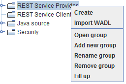
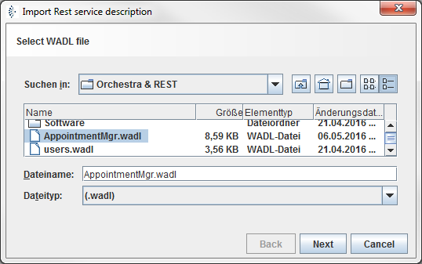
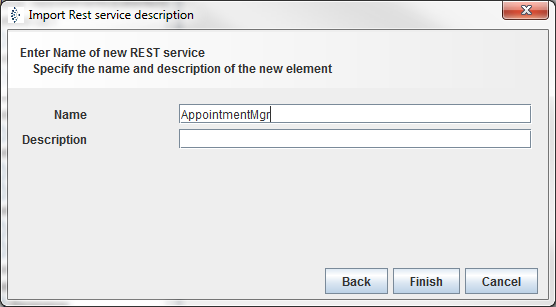

Import wadl file

Topic content
Orchestra provides you with an ability to create REST Service Provider object by importing WADL file definition.
1.Right Click on the REST Client Provider option from orchestra designer main menu.
2.Select Import WADL option to create a new REST Client Provider entry.

Figure 34 – REST Service Provider - import wadl file
3.You will be presented with the Import Rest service description dialog.
4.Select the WADL description file and click the Next button.
5.On the second screen name the REST Service and click on the Finish button.
 
Figure 35 – REST Service Provider - import Rest service wizard
6.After clicking the Finish button, new REST Service Provider object will be created and the configuration panel will be opened.